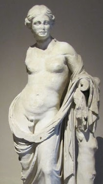
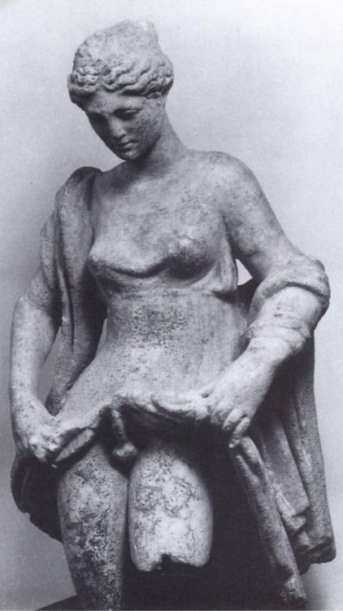
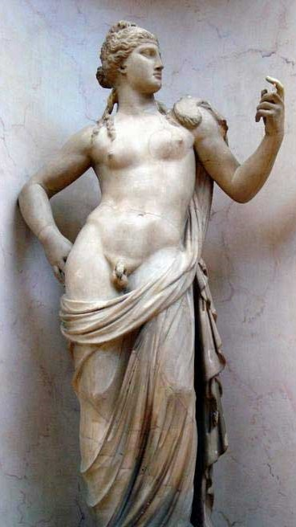
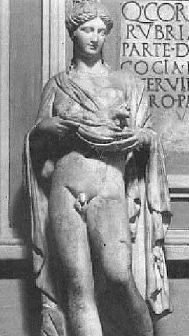
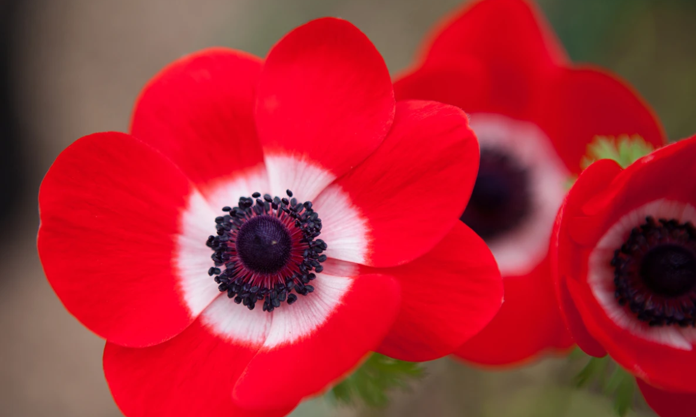

Shakespeare's Inspiration
Shakespeare inaugurates his 'Venus and Adonis' with a Latin quote from the Roman poet Horace:
Vilia miretur vulgus: mihi flavus Apollo Pocula Castalia plena ministret aqua.
Translation:
Let the vulgar crowd admire cheap things; let yellow Apollo Serve me with cups full of Castalian water.
The last part of the quote alludes to the Castalian spring at Delphi where Apollo killed Python and established his oracle. The spring was associated with prophecy and poetic inspiration.
Even if Shakespeare's poem was divinely inspired, it wasn't created ex nihilo. It is believed that Shakespeare based his poem primarily on a tale of the two deities in Ovid's 'Metamorphoses' (8 CE) though he may have been inspired by other stories in the same book for transformation myths centering on a love pursuit is a common motif in the book and in Greco-Roman mythology in general. Not surprisingly, Metamorphoses, was a source of inspiration for Alchemists, as Harvard classicist, Edward Kennard Rand, is quoted in Ovid and the Alchemists
Ovid’s text is made a quarry for the alchemist’s pick and shovel … The fable of Deucalion and Pyrrha, for instance, betokens, like the twin peaks of Parnassus, the masculine and the feminine elements among the metals, that is, gold and silver, from the union of which the philosopher’s stone is produced. In this fashion, the whole poem is subjected to the fatal touch of Midas; Ovid’s gold is converted into the baser metal.
There are at least 3 transformation myths centering on a nymph or goddess pursuing a man she is in love with in Ovid's Metamorphoses:- Venus and Adonis
- Echo and Narcissus
- Salmacis and Hermaphroditus
Salmacis and Hermaphroditus
This story is similar to Ovid's tale of Venus and Adonis but for that the man being chased by an adoring woman, doesn't die, not in the literal sense, nor does a flower grow in the spot he died. Rather, when Salmacis sees Hermaphroditus bathing in the spring she haunted, being immediately enraptured, she wraps herself around him and prays to the gods that she and the son of Hermes and Aphrodite should never part. The gods grant her request, fusing the two beings into one body, a single being both male and female. One question that appears begging to be asked is: is the merging of male and female into one what Adonis had in store had he chosen to love Venus instead of going hunting? Is that the meaning of the red and white flower that springs from his blood?
On left: from the Alchemical manuscript, Splendor Solis (1582), depiction of a Hermaphrodite in the three principle colors of Alchemy, black, white, and red. Red and white here coloring the wings as if to imply having both forms makes the being divine. The being holds what is apparently meant to represent the Philosopher's Stone in the semblance of an egg. The image in the book is adjacent a parable on how the Stone is like an egg, uniting the 4 opposites (hot/cold, dry/wet) into one.
On right: a painting of Hermes and Aphrodite, parents of Hermaphroditus, by Walter Crane (1890) titled 'L'Art et la Vie' (Art and Life)
In Ovid's telling of Salmacis and Hermaphroditus, red and white appear together also, only briefly, when Salmacis attempts to gain affection and causes Hermaphroditus to blush:
‘After this the naiad was silent. A red flush branded the boy’s face. He did not know what love was: though the blush was very becoming. Apples are tinged with this colour, hanging in a sunlit tree, or ivory painted with red, or the moon, eclipsed, blushing in her brightness, while the bronze shields clash, in vain, to rescue her.
Note that here Ovid is comparing Hermaphroditus to a damsel in distress in the Moon who blushes because men are fighting to rescue her. Shakespeare gives Adonis a similar treatment when he writes:
He burns with bashful shame; she with her tears Doth quench the maiden burning of his cheeks. Then with her windy sighs and golden hairs To fan and blow them dry again she seeks. He saith she is immodest, blames her miss; What follows more she murders with a kiss.
Passing Notes, Ovid to Shake
The Sun's Eye of Passion
The nymph’s eyes blazed with passion, as when (the Sun's) likeness is reflected from a mirror, that opposes his brightest unclouded orb. She can scarcely wait, scarcely contain her delight, now longing to hold him, now unable to keep her love to herself. --Ovid, Metamorphoses: Salmacis and Hermaphroditus
The night of sorrow now is turned to day. Her two blue windows faintly she upheaveth Like the fair sun when in his fresh array He cheers the morn and all the earth relieveth; And as the bright sun glorifies the sky, So is her face illumined with her eye, --Shakespeare, Venus and Adonis
Consider the Lilies of the Field
Clapping his open palms to his side, he dives into the pool, and leading with one arm and then the other, he gleams through the pure water as if one sheathed an ivory statue, or bright lilies behind clear glass. --Ovid, Metamorphoses: Salmacis and Hermaphroditus
Full gently now she takes him by the hand, A lily prisoned in a jail of snow, Or ivory in an alabaster band, So white a friend engirts so white a foe. This beauteous combat, willful and unwilling, Showed like two silver doves that sit a-billing. --Shakespeare, Venus and Adonis
Paintings of Salmacis and Hermaphroditus
Hermaphroditus was a popular deity among the Greeks (Hermaphroditos in Greek) and Romans, and there are many statues carved in veneration. Interestingly, the common depiction of the being described as both male and female is as a woman with a penis and testicles. Recall that in the Orphic hymn to Adonis, the deity is called 'Female and Male', but in the Orphic hymns Adonis is not the only deity described so.
   The concept of a hermaphrodite like what is depicted above, what we call a transgender woman, was not foreign to Shakespeare. Indeed, the Bard dedicated a good portion of his sonnets to such a person, though it doesn't become obvious until Sonnet 20 where Shakespeare makes it known the man he's been writing to was meant to be a woman but given a penis by a-doting Nature that he should give women pleasure.
A woman’s face with nature’s own hand painted Hast thou, the master-mistress of my passion; A woman’s gentle heart, but not acquainted With shifting change as is false women’s fashion; An eye more bright than theirs, less false in rolling, Gilding the object whereupon it gazeth; A man in hue, all hues in his controlling, Which steals men’s eyes and women’s souls amazeth. And for a woman wert thou first created, Till nature as she wrought thee fell a-doting, And by addition me of thee defeated By adding one thing to my purpose nothing. But since she pricked thee out for women's pleasure, Mine be thy love and thy love’s use their treasure.
Though the Sacred Marriage is the subject of neither Shakespeare's poem nor Ovid's tale, not explicitly, both leave a clue. Neither author have Venus and Adonis end up in the Bridal Chamber, instead both have Adonis end up dead, a flower grown from his blood. So Shakespeare says:
And in his blood that on the ground lay spill’d, A purple flower sprung up, chequer’d with white; Resembling well his pale cheeks, and the blood Which in round drops upon their whiteness stood.
Note that Shakespeare uses purple here to denote the color of blood. In his time purple wasn't restricted to the hue it is now and could be used for a range of hue including dark or rich reds. Shake uses purple three times in the poem, first to describe the face of the setting sun, then twice more to mean the color of blood. Ovid similarly tells us the flower is a "blood-colored anemone", leaving us with one species of flower as an obvious candidate.
The anemone coronaria "crown anemone" known for its black crown. The flower blooms in a variety of colors, but there is a peculiar variant with petals that transition from white to red. A flower native to the Mediterranean, its name is supposed to derive from the Greek anemone, "windflower". Ovid is in agreement stating the flower is "too easily fallen, the winds deflower it, which are likewise responsible for its name, windflower" though other sources say it is so called because the flower will not bloom until it has been touched by the wind. Some believe the name anemone comes from the Arabic name of this particular flower, shaqa'iq An-Nu'man (wounds of An-Nu'man). The Red Crown Anemone is the national flower of Israel.
Even if Venus and Adonis don't end up merging into one flesh in Shakespeare's poem, the red and white flower that remains at the tragic conclusion may stand as a picture, an anticipation of Adonis' return and the reunion of red and white. Indeed, the number of times these two colors appear in Shakespeare's poem, one might think they were its subject. To see why this might be the case we turn now to Alchemy.
Three Golden Apples from the Hesperian grove. A present Worthy of the Queen of Love. Gave wise Hippomenes Eternal Fame. And Atalanta's cruel Speed O'ercame. In Vain he follows 'till with Radiant Light, One Rolling Apple captivates her Sight. And by its glittering charms retards her flight. She Soon Outruns him but fresh rays of Gold, Her Longing Eyes & Slackened Footsteps Hold, 'Till with disdain She all his Art defies, And Swifter then an Eastern Tempest flies. Then his despair throws his last Hope away, For she must Yield whom Love & Gold betray. What is Hippomenes, true Wisdom knows. And whence the Speed of Atalanta Flows. She with Mercurial Swiftness is Endued, Which Yields by Sulphur's prudent Strength pursued. But when in Cybel's temple they would prove The utmost joys of their Excessive Love, The Matron Goddess thought herself disdained, Her rites Unhallowed & her shrine profaned. Then her Revenge makes Roughness o'er them rise, And Hideous feireenesse Sparkle from their Eyes. Still more Amazed to see themselves look red, Whilst both to Lions changed Each Other dread. He that can Cybell's Mystic change Explain, And those two Lions with true Redness stain, Commands that treasure plenteous Nature gives And free from Pain in Wisdom's Splendor lives. --Michael Maier, Atalanta Fugiens